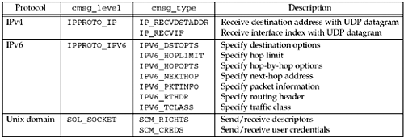
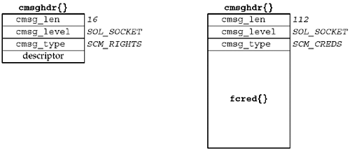

| [ Team LiB ] |
|
14.6 Ancillary DataAncillary data can be sent and received using the msg_control and msg_controllen members of the msghdr structure with the sendmsg and recvmsg functions. Another term for ancillary data is control information. In this section, we will describe the concept and show the structure and macros used to build and process ancillary data, but we will save the code examples for later chapters that describe the actual uses of ancillary data. Figure 14.11 is a summary of the various uses of ancillary data we cover in this text. Figure 14.11. Summary of uses for ancillary data. The OSI protocol suite also uses ancillary data for various purposes we do not discuss in this text. Ancillary data consists of one or more ancillary data objects, each one beginning with a cmsghdr structure, defined by including <sys/socket.h>.
struct cmsghdr {
socklen_t cmsg_len; /* length in bytes, including this structure */
int cmsg_level; /* originating protocol */
int cmsg_type; /* protocol-specific type */
/* followed by unsigned char cmsg_data[] */
};
We have already seen this structure in Figure 14.9, when it was used with the IP_RECVDSTADDR socket option to return the destination IP address of a received UDP datagram. The ancillary data pointed to by msg_control must be suitably aligned for a cmsghdr structure. We will show one way to do this in Figure 15.11. Figure 14.12 shows an example of two ancillary data objects in the control buffer. msg_control points to the first ancillary data object, and the total length of the ancillary data is specified by msg_controllen. Each object is preceded by a cmsghdr structure that describes the object. There can be padding between the cmsg_type member and the actual data, and there can also be padding at the end of the data, before the next ancillary data object. The five CMSG_xxx macros we describe shortly account for this possible padding. Figure 14.12. Ancillary data containing two ancillary data objects.
Figure 14.13 shows the format of the cmsghdr structure when used with a Unix domain socket for descriptor passing (Section 15.7) or credential passing (Section 15.8). Figure 14.13. cmsghdr structure when used with Unix domain sockets. In this figure, we assume each of the three members of the cmsghdr structure occupies four bytes and there is no padding between the cmsghdr structure and the actual data. When descriptors are passed, the contents of the cmsg_data array are the actual descriptor values. In this figure, we show only one descriptor being passed, but in general, more than one can be passed (in which case, the cmsg_len value will be 12 plus 4 times the number of descriptors, assuming each descriptor occupies 4 bytes). Since the ancillary data returned by recvmsg can contain any number of ancillary data objects, and to hide the possible padding from the application, the following five macros are defined by including the <sys/socket.h> header to simplify the processing of the ancillary data:
POSIX defines the first three macros; RFC 3542 [Stevens et al. 2003] defines the last two. These macros would be used in the following pseudocode:
struct msghdr msg;
struct cmsghdr *cmsgptr;
/* fill in msg structure */
/* call recvmsg() */
for (cmsgptr = CMSG_FIRSTHDR(&msg); cmsgptr != NULL;
cmsgptr = CMSG_NXTHDR(&msg, cmsgptr)) {
if (cmsgptr->cmsg_level == ... &&
cmsgptr->cmsg_type == ... ) {
u_char *ptr;
ptr = CMSG_DATA(cmsgptr);
/* process data pointed to by ptr */
}
}
CMSG_FIRSTHDR returns a pointer to the first ancillary data object, or a null pointer if there is no ancillary data in the msghdr structure (either msg_control is a null pointer or cmsg_len is less than the size of a cmsghdr structure). CMSG_NXTHDR returns a null pointer when there is not another ancillary data object in the control buffer.
The difference between CMSG_LEN and CMSG_SPACE is that the former does not account for any padding following the data portion of the ancillary data object and is therefore the value to store in cmsg_len, while the latter accounts for the padding at the end and is therefore the value to use if dynamically allocating space for the ancillary data object. |
| [ Team LiB ] |
|